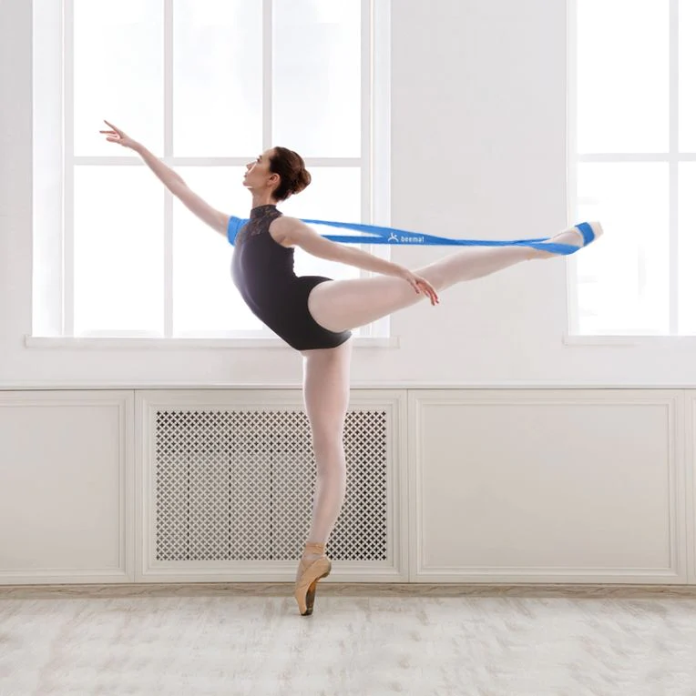
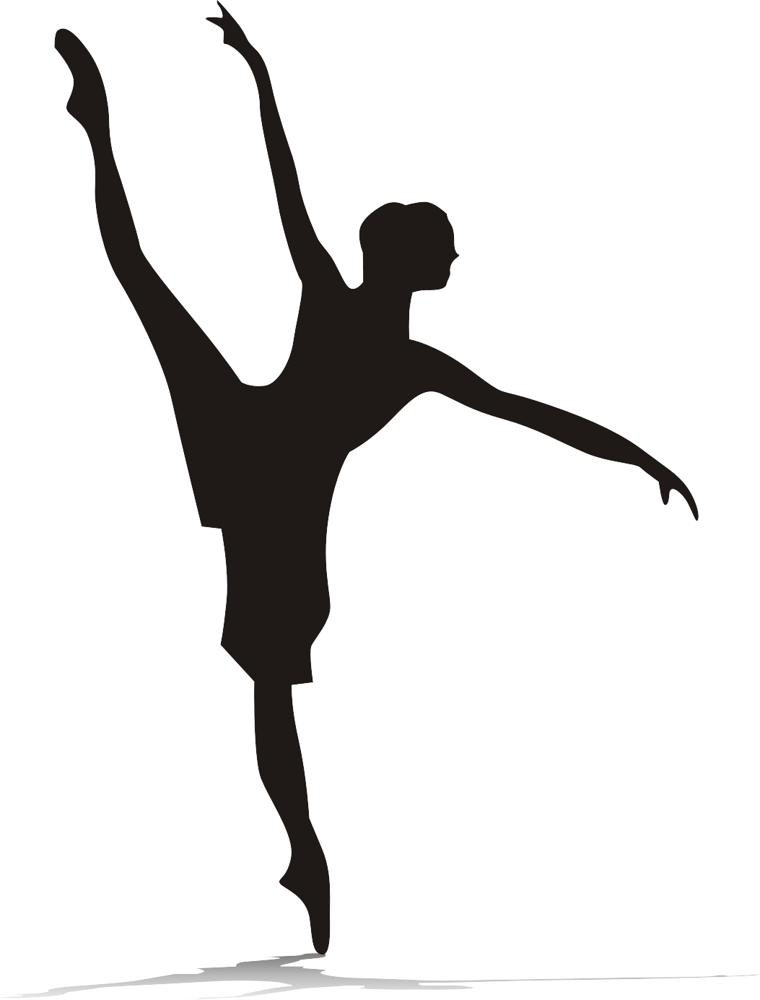
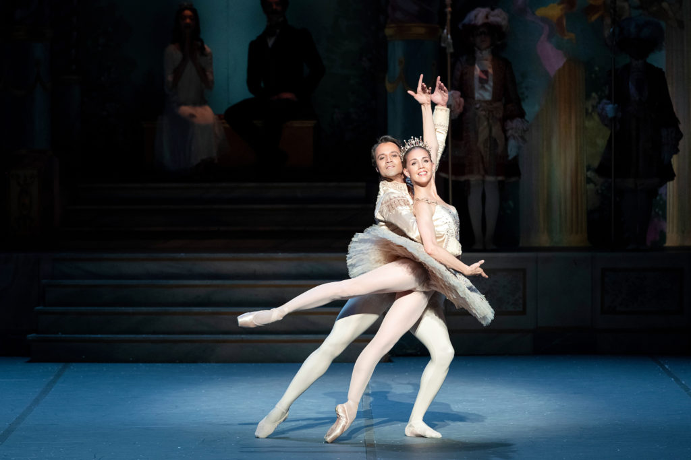

The ’ballet body’ is coveted for a reason. To maintain the skimming-the-heavens, taut verticality of classical dance, the postural muscles that support the spine must come into play, and the abdominal muscles too (hello six-pack!) Port de bras tones the arms, and all those quick beats, big jumps and the sustained holds of adage tone the legs (calf rises, which our Studios teachers incorporate into their barre, also do a wonderful job of this).
Improved balance:
As we age, our ability to balance declines. In the later phases of our life, this may lead to an increased risk of falls. People who practise balance throughout their lives will have improved mobility and stability: nailing that arabesque on demi-pointe could help save your life! Interestingly, research has shown that dance can successfully improve walking speed and improve mood and happiness in people with Parkinson’s disease.
Mental agility:
If you’ve ever seen professional dancers take class, you may have marvelled at their ability to see a complex chain of steps demonstrated by the ballet mistress or master, instantly absorb it and flawlessly execute it. Ballet gets your brain humming with different combinations of steps (called 'enchainments') each week – excellent for the health of your cerebral matter. Think of it as a highly physical form of cryptic crosswords.
Communication:
Dance is the art of telling stories without the need for words, so it’s a fantastic way to bring together groups of people who may not be able to communicate in the same language. So much so that dance has been successfully used as a way to bring together young families in culturally diverse neighbourhoods in the UK, helping new parents socialise and create friendships. source:


